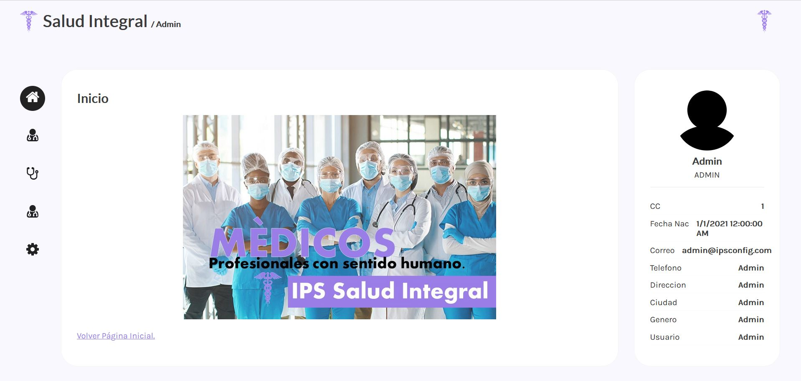

Ips integral de la salud
Se conoce como instituto prestador de salud (IPS) a todas las instituciones privadas en Colombia que prestan los servicios médicos de consulta, hospitalarios, clínicos y de cuidados intensivos. Una IPS es contratada por las entidades promotoras de salud (EPS) para que cumpla con los planes y servicios que estas ofrecen (promueven) a sus usuarios, pero son las EPS que cancelan todos los gastos médicos que sus pacientes generen a las IPS.
La Ley 100 de 1993 las faculta para crear y prestar servicios de salud." ... IPS: Son las Instituciones encargadas de prestar los servicios de salud en su nivel de atención correspondiente a los afiliados y beneficiarios dentro de los parámetros y principios señalados en la presente Ley.